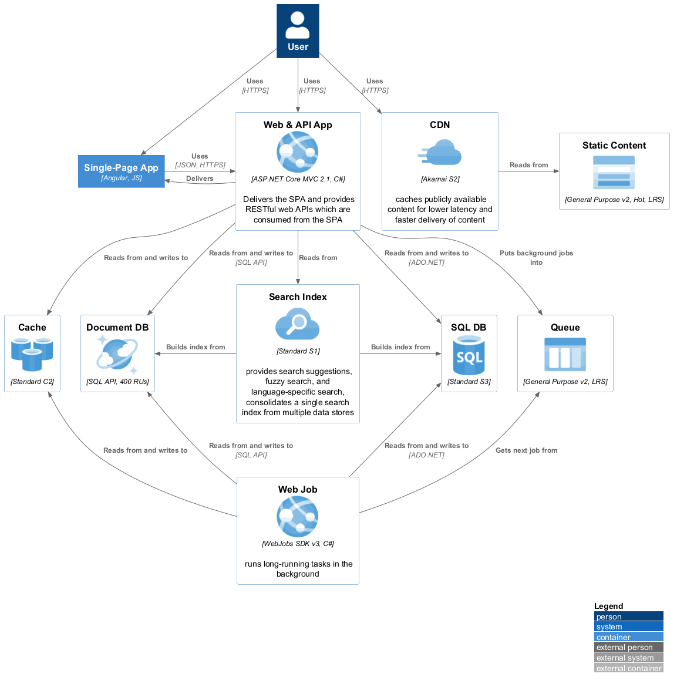

@startuml
!include <C4/C4_Container>
!include <azure/AzureCommon>
!include <azure/Databases/AzureRedisCache>
!include <azure/Databases/AzureCosmosDb>
!include <azure/Databases/AzureSqlDatabase>
!include <azure/Web/AzureWebApp>
!include <azure/Web/AzureCDN>
!include <azure/Web/AzureSearch>
!include <azure/Storage/AzureBlobStorage>
!include <azure/Storage/AzureQueueStorage>
LAYOUT_WITH_LEGEND()
Person(user, "User")
Container(spa, "Single-Page App", "Angular, JS")
AzureWebApp(webApp, "Web & API App", "ASP.NET Core MVC 2.1, C#", "Delivers the SPA and provides RESTful web APIs which are consumed from the SPA")
AzureCDN(cdn, "CDN", "Akamai S2", "caches publicly available content for lower latency and faster delivery of content")
AzureBlobStorage(staticBlobStorage, "Static Content", "General Purpose v2, Hot, LRS")
AzureQueueStorage(queue, "Queue", "General Purpose v2, LRS")
AzureSearch(search, "Search Index", "Standard S1", "provides search suggestions, fuzzy search, and language-specific search, consolidates a single search index from multiple data stores")
AzureRedisCache(redisCache, "Cache", "Standard C2")
AzureCosmosDb(cosmosDb, "Document DB", "SQL API, 400 RUs")
AzureSqlDatabase(sqlDb, "SQL DB", "Standard S3")
AzureWebApp(webJob, "Web Job", "WebJobs SDK v3, C#", "runs long-running tasks in the background")
Rel(user, spa, "Uses", "HTTPS")
Rel(user, webApp, "Uses", "HTTPS")
Rel(user, cdn, "Uses", "HTTPS")
Rel_Neighbor(spa, webApp, "Uses", "JSON, HTTPS")
Rel_Back_Neighbor(spa, webApp, "Delivers")
Rel_Neighbor(cdn, staticBlobStorage, "Reads from")
Rel(webApp, queue, "Puts background jobs into")
Rel(webApp, sqlDb, "Reads from and writes to", "ADO.NET")
Rel(webApp, cosmosDb, "Reads from and writes to", "SQL API")
Rel(webApp, redisCache, "Reads from and writes to")
Rel(webApp, search, "Reads from")
Rel_U(webJob, queue, "Gets next job from")
Rel_U(webJob, sqlDb, "Reads from and writes to", "ADO.NET")
Rel_U(webJob, cosmosDb, "Reads from and writes to", "SQL API")
Rel_U(webJob, redisCache, "Reads from and writes to")
Rel_Back_Neighbor(cosmosDb, search, "Builds index from")
Rel_Neighbor(search, sqlDb, "Builds index from")
Lay_D(search, webJob)
@enduml